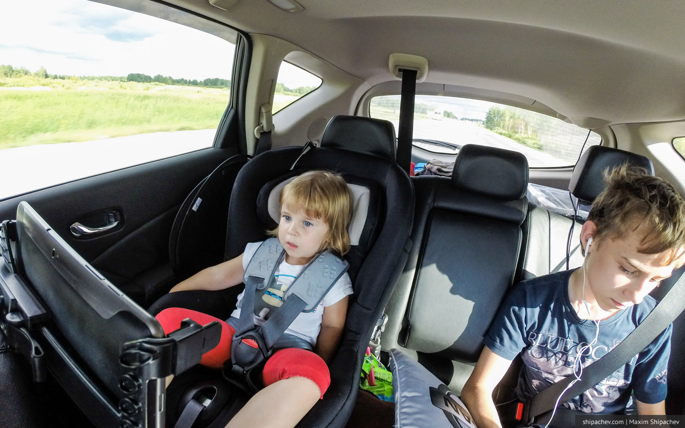

Если мне что-то интересно, я пытаюсь разобраться. Бывает, что пытаюсь разобраться по несколько лет.
Так вот. Наклейка «Ребёнок в машине» — тот самый жёлтый треугольник, нужна не для того, чтобы сказать окружающим, что у вас однажды был секс.

Эту наклейку стоит размещать для того, чтобы дать сигнал спасателям и медикам, в случае ДТП, о том, что в машине есть кто-то, кому помощь нужна прежде всего.
Разумеется, хорошим тоном является убирать эту наклейку, когда ребёнка в машине нет.